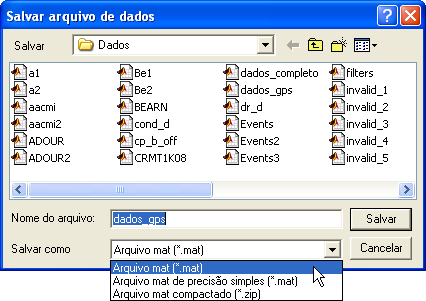

| Menu
Arquivo |
  |
Salvar
Arquivo mat
O R_DAT dispõe
de duas operações para salvamento do arquivo
corrente
Salvar
Arquivo
Essa operação
salva as matrizes atuais sobre o arquivo mat
ou zip de origem.
Clique no menu “Arquivo ►
Salvar arquivo mat” ou
no botão  na
Barra de Ferramentas.
na
Barra de Ferramentas.
Caso o arquivo corrente tenha sido aberto a partir da operação “Carregar arquivo mat” (carregamento de arquivo em um padrão reconhecido pelo R_DAT) ou salvo anteriormente pela operação “Salvar arquivo” ou “Salvar arquivo como ...”, o R_DAT irá armazenar o caminho e o nome do arquivo mat correspondente.
Ao selecionar a
operação “Salvar arquivo”, o R_DAT
solicitará que o usuário confirme a operação, sobrescrevendo o arquivo anterior:
Caso o arquivo
corrente tenha sido importado de outro
formato, o R_DAT armazenará apenas o caminho, e a operação “Salvar
arquivo”
chamará a operação “Salvar arquivo como ...”.
Salvar
Arquivo Como ...
Essa operação
salva as matrizes atuais em
um novo arquivo mat ou sobrescreve um arquivo salvo anteriormente.
Também é possível salvar um arquivo mat compactado (.zip).
Clique em
“Arquivo ► Salvar arquivo mat
como ...” ou no
botão  na
Barra de Ferramentas e escolha a opção
“Tudo”.
na
Barra de Ferramentas e escolha a opção
“Tudo”.
Será apresentada uma janela para que o usuário informe o caminho, o tipo do arquivo (.mat ou .zip) e o nome do arquivo a ser salvo. No caso de arquivos mat, é possível salvá-lo com precisão dupla (64 bits por elemento) ou simples (32 bits por elemento).
O caminho e nome iniciais são os previamente armazenados pelas operações “Carregar arquivo mat”, “Salvar arquivo” ou “Salvar arquivo mat como ...”.

Formatação
Em ambas as
operações, o R_DAT salvará
as matrizes DADOS e PARAM como variáveis em um arquivo mat
ou zip segundo a formatação adotada pelo IPEV:
| Variável: |
DADOS |
| Descrição: |
Matriz de dados
numéricos, em que cada linha representa uma observação e cada coluna
representa um parâmetro. |
| Formatação: |
Matriz numérica
n × m não vazia (n observações por m parâmetros) em precisão dupla (64 bits por elemento) ou simples (32 bits por elemento). |
| |
|
| Variável: |
PARAM |
| Descrição: |
Matriz de texto
contendo os nomes dos parâmetros. |
| Formatação: |
Matriz de texto
contendo um nome de parâmetro por linha (completados com espaços para
armazenamento em forma de matriz). |
Será salva, ainda, uma variável contendo as propriedades do arquivo, definidas pelo usuário na janela Propriedades.
| Variável: |
properties |
| Descrição: |
Estrutura que armazena as propriedades inseridas pelo usuário. |
| Formatação: |
Estrutura
contendo os seguintes campos: 1- mission: texto contendo o nome descritivo da missão (voo); 2- crew: matriz com duas células de texto contendo o nome da tripulação; 3- date: data do voo no formato dd/mm/aaaa; 4- time: hora da decolagem no formato hh:mm; 5- flighttime: tempo de voo no formato hh:mm; 6- number: número do voo; 7- aircraft: texto contendo o tipo da aeronave; 8- tailnumber: texto contendo a matrícula da aeronave; 9- unit: texto contendo a unidade aérea da aeronave; 10- inventory: matriz de células de texto multi-linhas contendo a configuração da aeronave; 11- operation: texto contendo o nome da operação ou campanha; 12- location: texto contendo a localidade da operação; 13- security: texto contendo o grau de sigilo da operação (ostensivo, reservado, confidencial ou secreto); 14- remarks: matriz de células de texto multi-linhas contendo observações gerais; 15- responsible: texto contendo o nome do responsável pelo arquivo. |
Caso o usuário
tenha definido eventos e/ou pontos de ensaio,
essas informações também serão salvas no arquivo mat. Ao carregar
novamente o arquivo,
essas informações serão resgatadas.
As variáveis
que contém essas informações são:
|
Variável: |
reftime |
|
Descrição: |
Vetor que
armazena o nome do parâmetro definido como tempo de referência para os
eventos e pontos de ensaio (em segundos). |
|
Formatação: |
Vetor de texto
com uma linha. |
|
|
|
|
Variável: |
events |
|
Descrição: |
Matriz contendo
os dados dos eventos (validade, tempo e descrição). |
|
Formatação: |
Matriz de
células n × 3 (n eventos), com as seguintes colunas: 1- Validade: valor
lógico (0 ou 1) indicando se o evento é válido e aparece no gráfico; 2- Tempo: valor
numérico indicando o instante do evento em segundos; 3- Descrição:
vetor de texto com descrição sucinta do evento. |
|
|
|
|
Variável: |
testpts |
|
Descrição: |
Estrutura com
múltiplos registros (1 ×
n) contendo as definições dos pontos de ensaio. Cada registro
corresponde a um grupo de pontos de ensaio. |
|
Formatação: |
Estrutura
contendo os seguintes campos: 1- group: nome do grupo
de pontos de ensaio; 2- include: vetor lógico
indicando os dados gerais requeridos para compilação de resultados; 3- number: matriz de
células de texto contendo a numeração dos pontos de ensaio; 4- descr: matriz de
células de texto contendo a descrição dos pontos de ensaio; 5- time: matriz
numérica com o tempo inicial e final de cada ponto de ensaio em
segundos; 6- param: matriz
de células contendo os parâmetros relevantes da lista de pontos; 7- data: vetor
lógico indicando os dados específicos requeridos para compilação de
resultados; 8- fit: matriz
numérica com as definições de ajuste de curva de cada parâmetro; 9- aim: matriz
numérica com os valores esperados de cada parâmetro para cada ponto; 10- range1: matriz
numérica com a faixa de medidas (+) de cada parâmetro para cada ponto; 11- range2: matriz
numérica com a faixa de medidas (-) de cada parâmetro para cada ponto; 12- tol1: matriz
numérica com a tolerância (+) de cada parâmetro para cada ponto; 13- tol2: matriz
numérica com a tolerância (-) de cada parâmetro para cada ponto; 14- inisample: tempo no
início do ponto para determinação do valor inicial de referência (s). |
Para a edição dessas variáveis, utilize as ferramentas “Editor de eventos” e “Editor de pontos de ensaio”.
|
Variável: |
setup |
|
Descrição: |
Estrutura de dados contendo a configuração dos parâmetros para reprodução do voo. |
|
Formatação: |
Estrutura
contendo os seguintes campos: 1- params:
estrutura contendo os nomes dos parâmetros de voo; 2- acft: texto contendo o tipo da silhueta da aeronave; 3- engmax: matriz 2 × 3 contendo os valores máximos e os multiplicadores dos indicadores de motor. |
|
|
|
|
Variável: |
scenario |
|
Descrição: |
Estrutura de dados contendo o cenário tático para reprodução do voo. |
|
Formatação: |
Estrutura
contendo os seguintes campos: 1- date: data do voo no formato dd/mm/aaaa; 2- Dmag: delinação
magnética local em graus; 3- map: estrutura de dados dos Mapas; 4- aid: estrutura de dados dos Auxílios de Navegação; 5- aux: estrutura de dados dos Objetos Auxiliares; 6- wpt: estrutura de dados dos Waypoints; 7- fa: estrutura de dados das Áreas de Voo; 8-
rt: estrutura de dados das Rotas; 9- avd: estrutura de dados das Avoid Zones; 10- thr: estrutura de dados das Threat Areas; 11- cnt: extrutura de dados da Linha de
Contato. |
| |
Incorporar
arquivo |
Salvar arquivo
parcial |
|